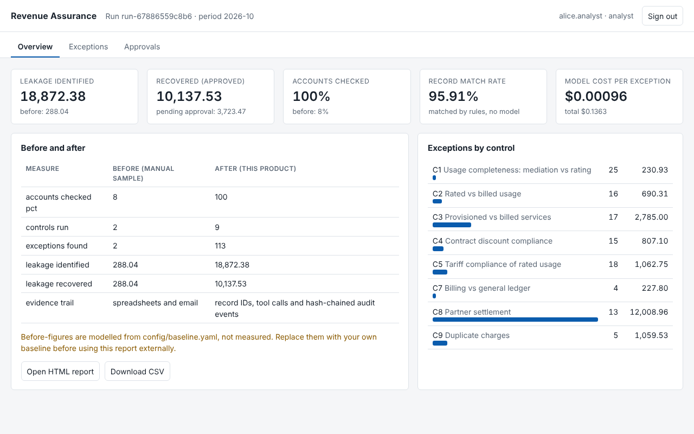
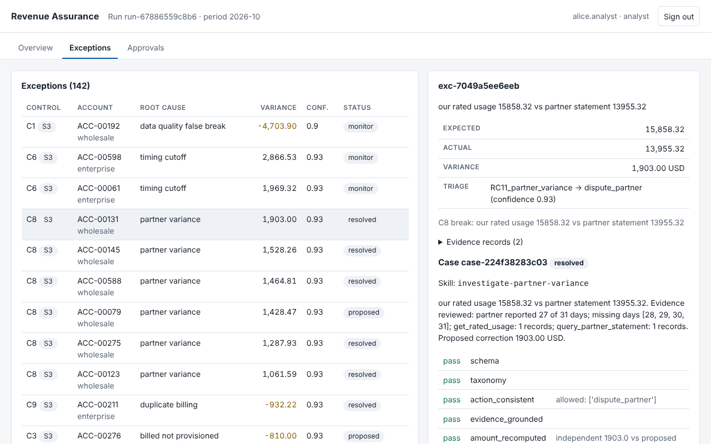
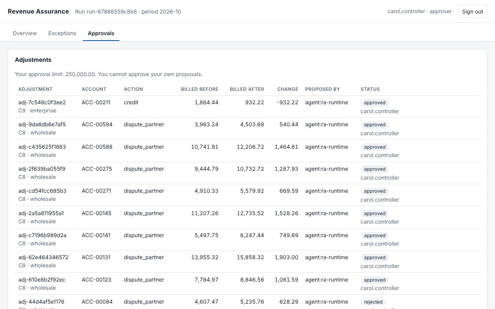
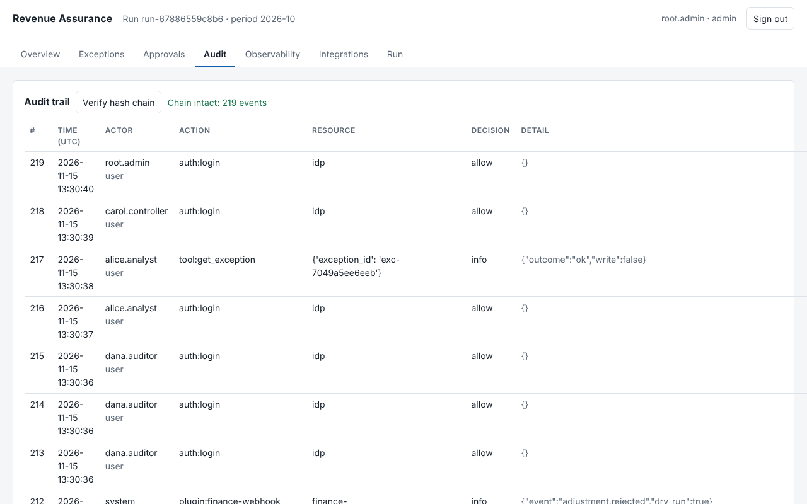

Reconcile 4 million transactions a day. Let AI work only on the breaks.
A revenue assurance system for 10 billing and data systems on Amazon Bedrock and AgentCore, delivered with Claude Code. The repository includes a product you can run today: sign-in and policy, nine controls, agents with tools and skills, MCP, A2A, plug-ins, audit and reporting. Deterministic rules match the bulk; agents investigate exceptions with evidence; analysts approve every adjustment until the data earns more autonomy.
Where the work goes on a typical day
Bar length on a log scale; volumes are planning assumptions
About 98% of records never touch a model. Illustrative model spend: about $1.8K a day, against about $36K if a mid-tier model read every transaction.
A product you can run in five minutes
One container serves the console, the API, an MCP server and an A2A endpoint. It runs on a laptop with synthetic data for ten sources and an offline reasoner, so nothing needs a cloud account. Point it at Amazon Bedrock and your identity provider with settings, not code changes.
Reconcile
Nine deterministic controls across ten sources. Each break carries the record IDs that prove it.
no modelTriage
Root cause, action and confidence. An invalid answer is downgraded, never queued as a classification.
small modelInvestigate
One skill per root cause runs its tools, and asks the partner's agent when the other half of the data is theirs.
skills + tools + A2AVerify
The amount is recomputed from the records. Unknown evidence IDs or a wrong sign block the proposal.
no modelApprove
A person decides, within their limit, never on their own proposal. Approval queues the ERP posting.
human in the loop



Screenshots are from a demo run on synthetic data: 6,554 records, 142 exceptions, 95.9% of records matched by rules, 14 investigations, all passing verification. Triage scores 100% on this data because the offline reasoner and the fault generator share one fault catalogue; that is not evidence about real data.
Who is calling, and what they may do
Every request carries a signed token. Every action passes a default-deny policy. People, machine clients and the AI tier are separate identities, and the AI tier can never approve.
Authentication
- Production
- OIDC (Cognito, Entra ID, Okta)
- Local and demo
- built-in provider
- Token
- RS256 JWT, 30 min
- Machine clients
- client credentials
- Stored secrets
- scrypt hashes
- Lockout
- 5 failures, 5 min
- Token endpoint limit
- 20 / min / address
Authorization rules
- Roles grant permissions; anything not granted is refused.
- Business unit: you see only the units in your scope, in lists, details and tool results.
- Approval limit: an amount above your limit is refused.
- Four-eyes: nobody approves their own proposal, admins included.
- Human-only: no agent or service can approve, whatever roles it holds.
Roles
- viewer
- read
- analyst
- work cases, propose
- approver
- approve, reject
- auditor
- audit, traces
- operator
- runs, plug-ins
- integration
- MCP, A2A read
- agent
- tools, propose
The OIDC path is implemented but has not been tested against a live identity provider. Test it against yours before go-live.
Tools, skills, MCP, A2A and plug-ins
One tool registry serves the agents, the REST API and MCP clients, so every caller meets the same policy, row limits and audit trail. Skills hold the investigation procedures. Plug-ins carry events to the systems you already run.
| Surface | What it is | What ships |
|---|---|---|
| Tools | Typed functions that read source records and return the record IDs used | 13 tools; one write tool, propose_adjustment, which only creates a pending proposal |
| Skills | A SKILL.md per root cause: when to use it, which tools it may call, the procedure | 8 skills: usage gap, pricing, service billing, discount, ledger, partner variance, duplicate, general |
| MCP server | The same tools for Claude, IDEs and other agents | Streamable HTTP at /mcp/ with bearer auth; stdio for local clients |
| A2A outbound | Ask a partner's settlement agent for the detail behind its statement | Used by the partner-variance skill; shares only account, period and skill name |
| A2A inbound | Other agents ask this product about exceptions | Agent card plus three skills: explain, summarize, investigate |
| Plug-ins | Sinks receive events; sources feed runs. Outbox delivery with retries and idempotency keys | ERP journal, Jira, ServiceNow, Slack, signed webhook, CSV source, example Teams package |
A2A follows protocol version 0.3 (JSON-RPC: message/send, tasks/get, tasks/cancel); streaming and the 1.0 operation names are not implemented. HTTP connectors have been run in dry-run mode only, which is their default.
Every action recorded, every hop traced
One trace ID joins the HTTP response, the log lines, the spans and the audit events for a piece of work.
Audit trail
- Sign-ins, denials with reasons, and every write.
- Every tool call, by people, agents and MCP clients.
- Before and after values on each decision.
- What was shared with a partner agent.
- SHA-256 hash chain: an edited or deleted row is found by the chain check.
Traces
Metrics and alerts
- Prometheus series
- 19
- Alert rules
- 6
- Verifier fail rate
- alert > 20%
- Model spend
- per step, per day
- Plug-in deliveries
- failed, dead
- Denials, login failures
- spike alerts
A hash chain shows tampering; it does not prevent it. In production, also copy events to write-once storage.
Before and after, on the same run
The report compares the manual, sample-based review with this product over identical data, so the difference is the process. It also lists the billed amount before and after each adjustment. Available as JSON, CSV and HTML.
| Measure (demo run, synthetic data) | Before: manual sample | After: this product |
|---|---|---|
| Accounts checked | 8% | 100% |
| Controls run | 2 | 9 |
| Exceptions found | 2 | 113 |
| Leakage identified | 288 | 18,872 |
| Recovered | 288 (assumed) | 10,138 approved; 3,723 pending |
| Evidence trail | Spreadsheets and email | Record IDs, tool calls, audit events |
The before-column is modelled from placeholder assumptions in config/baseline.yaml (8% sample, 70% detection, two controls). It is not a measurement. Replace it with your own baseline before quoting any of these numbers.
Four rules the design never breaks
Revenue assurance moves money and answers to auditors. These rules keep an AI system inside those constraints at 4M transactions a day.
Rules first, models for exceptions
Controls C1 to C9 match records with keys, tolerances and aggregation in Spark and Flink. Only breaks become events for the AI tier.
Agents propose, people approve
Investigators have read-only tools. The single write tool creates a pending proposal; posting to billing or ERP waits for an analyst.
Evals are the release gate
A double-labeled gold set exists before the first agent. No prompt, model or threshold ships if any critical slice regresses.
Every decision can be replayed
One case ID links source records, rule runs, retrieved documents, model calls, versions and the approver in an immutable record.
Six layers, one direction of flow
Each production domain runs in its own AWS account. Workloads have no internet route; every service is reached through VPC endpoints.
10 source systems
Ingestion and contracts
Lakehouse
Reconciliation engine
AI exception tier
Case management
Specialists gather evidence; a verifier and a person close the case
The supervisor plans and enforces a budget per case. Specialists run in parallel with their own allow-listed tools. Failed verification re-plans at most twice, then hands the case to an analyst with the evidence gathered so far.
Triage
Root cause, action and confidence for each exception group. Escalates to a stronger model below 0.7.
small modelSupervisor
Plans two to five steps within 12 calls, 60K tokens and 3 minutes.
mid modelFour specialists
Ledger evidence, pricing and contract, identity, partner settlement.
read-only toolsRoot cause + verifier
Impact computed by a tool, never the model. Verifier checks citations, numbers and policy.
different judgeAnalyst approval
Approve, edit or reject. Dual approval above the high threshold.
human in the loop| Task | Model tier | Why |
|---|---|---|
| Triage, extraction, memory summaries | Small | High volume, cached prompt prefix, batch where latency allows |
| Supervisor, specialists, explanations | Mid | Best cost and quality for multi-step tool use |
| Top 1% by value, verifier disagreement | Frontier | Deeper reasoning where the money justifies it |
| Eval judge | Different family | Avoids self-preference; calibrated against analysts |
Eight phases, seven gates, production in about 28 weeks
Claude Code agents draft requirements, specs, code, tests and reports. Named owners approve at every gate. Data readiness and evaluation run alongside the build, so the gold set exists before the first agent.
| Release | What the AI may do | Evidence to move up |
|---|---|---|
| R1 Shadow | Recommend in the background; analysts decide everything | One full billing cycle; agreement reviewed per class |
| R2 Recommend | Propose cause and action; an analyst approves every case | Per class: 300+ cases, override 2% or less, 99% audited precision |
| R3 Auto-close | Close proven low-value classes; weekly blind audit | Steps down automatically on override spikes or a wrong closure |
Built to be measured, traced and audited
The same thresholds gate every pull request, every release candidate and every model upgrade.
Release gate thresholds
- Recon precision / recall
- 99.5% / 99%
- Retrieval recall@8
- 0.90
- Triage macro-F1
- 0.85
- Confidence calibration (ECE)
- < 0.05
- Investigation correct
- 0.90
- Impact error
- 0
- Adversarial cases blocked
- 100%
Traceability chain
Written for every case to S3 with Object Lock; traces are sampled, the provenance record never is.
Service levels
- Bill-run recon
- < 2 h
- Intraday break flagged (p95)
- < 5 min
- Exceptions triaged
- 99% < 4 h
- Agent step (p95)
- < 20 s
- Assistant first token (p95)
- < 3 s
- Recovery (RTO / RPO)
- 4 h / 15 min
How projects like this fail, and what prevents it
The full list of anti-patterns, with scenarios and fixes, is reviewed at every gate.
| Anti-pattern | What goes wrong | Prevention |
|---|---|---|
| LLM on every transaction | About 20× cost, throttling at bill run, no audit trail | Rules engine first; track model calls per 1,000 transactions |
| Autonomy before evidence | One wrong auto-close destroys finance's trust | Three-release autonomy ladder decided at G0 |
| Identity as an afterthought | Floods of false breaks; analysts ignore the queue | Identity coverage of 98% as a G2 gate |
| Model computes money | Arithmetic errors in financial explanations | Deterministic impact tool; number-diff check in CI |
| Tuning on the test set | Final scores overstate real quality | Held-out set opened once per release candidate, logged |
| Blaming the model for drift | Prompts retuned when a source system changed | Check source data, then business change, then the model |
Clone it, run it, then make it yours
The product, 37 passing tests, documents, specs, Claude Code configuration and CI with an eval gate.
Layout
. ├── CLAUDE.md project context for Claude Code ├── .claude/ settings, hooks, subagents, skills ├── .github/ CI, eval gate, Pages, templates ├── docs/ architecture, aSDLC phases, ADRs ├── specs/ U1 to U7 unit specs and tasks ├── features/ Gherkin acceptance scenarios ├── data/ taxonomy, contracts, controls ├── src/ra/ the product: api, auth, recon, agents, │ tools, mcp, a2a, plugins, audit, obs ├── skills/ runtime agent skills ├── plugins/ plug-in guide and example package ├── deploy/ collector, Prometheus, alerts ├── prompts/ config/ prompts, routing, thresholds ├── evals/ harness, suites, fault library ├── infra/ IaC by account and environment └── website/ this site
Quick start
git clone https://github.com/your-org/revenue-assurance-ai.git cd revenue-assurance-ai python -m venv .venv && source .venv/bin/activate pip install -e ".[dev]" make test ra seed ra run --period 2026-10 ra serve
Volumes, thresholds and costs shown here are planning assumptions. Replace them with your Phase 0 baseline.